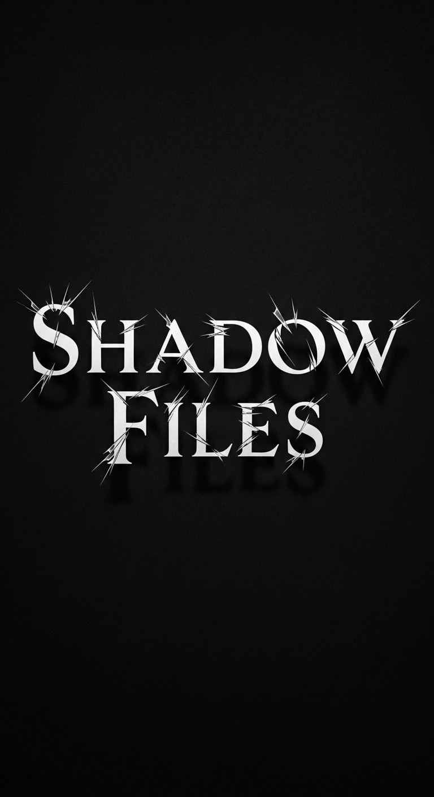
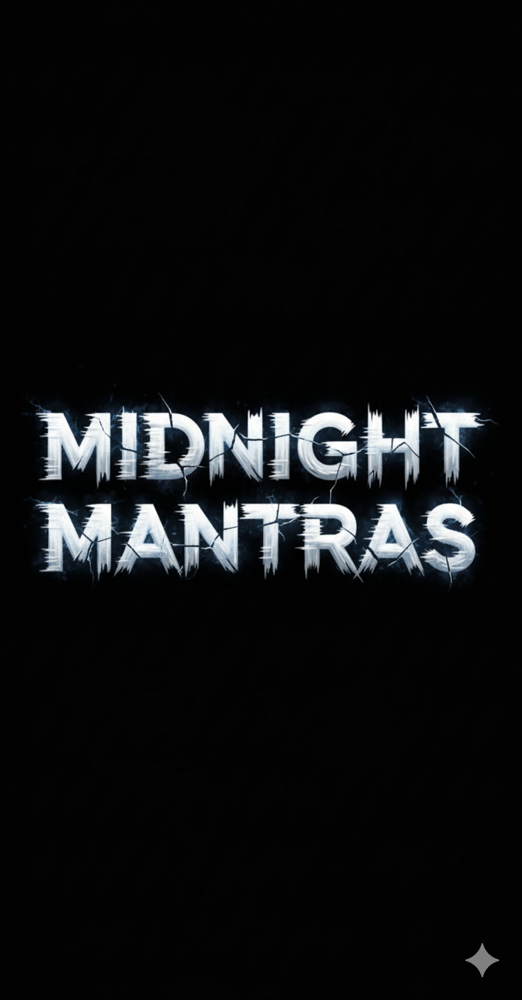

LumenFall
LumenFall
LUMENFALL
A LIGHT DIVIDED
JUSN38 STUDIO
LumenFall © 2025 JUSN38 STUDIO.
Todos los derechos reservados.
All rights reserved.
Todos os direitos reservados.
Ninguna parte de esta publicación puede ser reproducida...
No part of this publication may be reproduced...
Nenhuma parte desta publicação pode ser reproduzida...
Para aquellos que encuentran luz...
For those who find light...
Para aqueles que encontram luz...
1

2
Espacio para descripción de Bienvenida...
3

4
Espacio para descripción del Grimorio...
5

6
Espacio para descripción de Shadow Files...
7

8
Espacio para descripción del Diario...
9
Capítulo 1 – Fragmentos Rotos
Chapter 1 – Broken Fragments
Capítulo 1 – Fragmentos Quebrados
Muchos disfrutan una taza de café por la mañana. Para mí, ese aroma siempre fue un recordatorio de que el día había empezado… y que mi madre seguía ahí. La veía de espaldas, removiendo el café en la olla, el vapor subiendo como un velo entre nosotras. A veces me sonreía. Otras, sin mirarme, dejaba caer frases que se quedaban flotando en el aire, como esa vez que dijo que hubiera preferido que yo no hubiera nacido.
Many people enjoy a cup of coffee in the morning. For me, that aroma was always a reminder that the day had begun… and that my mother was still there. I would see her from behind, stirring the coffee in the pot, the steam rising like a veil between us. Sometimes she smiled at me. Other times, without looking at me, she would let fall phrases that lingered in the air, like that time she said she would have preferred if I had never been born.
Muitos apreciam uma xícara de café pela manhã. Para mim, esse aroma sempre foi um lembrete de que o dia havia começado… e de que minha mãe ainda estava lá. Eu a via de costas, mexendo o café na panela, o vapor subindo como um véu entre nós. Às vezes ela sorria para mim. Outras, sem me olhar, deixava escapar frases que ficavam flutuando no ar, como aquela vez em que disse que teria preferido que eu não tivesse nascido.
Pero en esas mañanas, con la lluvia golpeando el techo y el olor a tierra mojada entrando por la ventana, yo me aferraba a la ilusión de que todo estaba bien. Después de todo lo que casi me arruina, entendí que esos días eran un lujo que nunca volvería a tener.
But on those mornings, with the rain beating on the roof and the smell of wet earth coming in through the window, I clung to the illusion that everything was fine. After everything that nearly ruined me, I understood that those days were a luxury I would never have again.
Mas nessas manhãs, com a chuva batendo no telhado e o cheiro de terra molhada entrando pela janela, eu me agarrava à ilusão de que tudo estaba bem. Depois de tudo que quase me destruiu, entendi que aqueles dias eram um luxo que nunca mais teria.
Les voy a contar algo que me pasó hace mucho. El primero fue el alacrán. De pequeña, no soportaba esos bichos. En la finca, los niños mayores me agarraban uno vivo y me lo hacían correr por el brazo, riéndose mientras yo lloraba y pataleaba. Esa tarde, estaba descalza en el patio, bailando sola. Entonces lo vi: a centímetros de mi pie, un alacrán negro, vivo, inmóvil. Y entonces pasó. Sin que yo lo tocara, su cuerpo empezó a humear. El alacrán se encogió sobre sí mismo, ennegrecido, hasta quedar muerto. No había nadie cerca.
I’m going to tell you something that happened long ago. The first was the scorpion. As a child, I couldn’t stand them. On the farm, older kids would put one on my arm, laughing while I cried. That afternoon, barefoot in the yard, I saw it: a black scorpion, inches from my foot. Then it happened. Without touching it, its body began to smoke. It curled up, blackened, until dead. No one was around.
Vou contar algo que aconteceu há muito tempo. O primeiro foi o escorpião. Quando pequena, não suportava. Na fazenda, os meninos colocavam no meu braço, rindo enquanto eu chorava. Naquela tarde, descalça no pátio, vi: um escorpião preto, a centímetros do meu pé. Então aconteceu. Sem tocar, começou a soltar fumaça. Encolheu-se, enegrecido, até morrer. Não havia ninguém por perto.
10
El segundo fue un coche. Yo estaba en la acera, esperando a mi mamá, cuando escuché el chirrido de llantas. Un auto venía directo hacia mí, derrapando. Vi el reflejo del sol en el parabrisas, sentí el aire caliente cortarme la cara… y entonces, se detuvo. No frenó: se detuvo, como si hubiera chocado contra algo invisible. El conductor bajó pálido, jurando que el volante se le había trabado solo. Hubo más. Pequeñas salvaciones imposibles. La gente decía que Dios me cuidaba. Yo sonreía, pero por dentro, una semilla fría de duda empezaba a germinar.
The second was a car. I was on the sidewalk when I heard tires screeching. A car came straight at me. I felt the hot air... then it stopped. It didn't brake; it stopped as if hitting something invisible. The driver got out pale, swearing the wheel locked. There were more impossible salvations. People said God watched over me. I smiled, but a cold seed of doubt sprouted inside.
O segundo foi um carro. Eu estava na calçada quando ouvi pneus cantando. Um carro vinha em minha direção. Senti o ar quente... então parou. Não freou; parou como se batesse em algo invisível. O motorista saiu pálido, jurando que o volante travou. Houve mais salvações impossíveis. Diziam que Deus cuidava de mim. Eu sorria, mas uma semente fria de dúvida brotava.
Crecí en una familia que vivía del café. Desde que tengo memoria, las mañanas olían a granos tostándose y a tierra húmeda. Tenía un hermano mayor, Elías. Nunca nos llevamos bien. Él siempre encontraba la forma de recordarme que yo era “la menor” y que debía quedarme callada. Discutíamos por todo. Y estaba mi hermana, Sheyka. En ese entonces, yo no sabía que un día cambiaría mi vida para siempre. Para mí, era solo mi hermana: la que me peinaba, la que me prestaba su ropa a escondidas, la que me defendía de Elías.
I grew up in a coffee family. Mornings smelled of roasting beans. I had an older brother, Elías. We never got along. He always reminded me I was "the youngest." We argued about everything. And there was my sister, Sheyka. Back then, I didn't know she'd change my life. She was just my sister: the one who braided my hair, lent me clothes, defended me from Elías.
Cresci numa família de café. As manhãs cheiravam a grãos torrados. Tinha um irmão mais velho, Elías. Nunca nos demos bem. Ele sempre lembrava que eu era "a menor". Discutíamos por tudo. E havia minha irmã, Sheyka. Na época, não sabia que ela mudaria minha vida. Era apenas minha irmã: a que penteava meu cabelo, emprestava roupas, me defendia de Elías.
Éramos una familia como tantas, unida por el trabajo y separada por los silencios. Y entonces llegó el momento que lo cambió todo. El que me marcó para siempre. La noche en la finca. El jornalero.
We were a family like many, bound by work, separated by silence. Then came the moment that changed everything. The one that marked me forever. The night on the farm. The farmhand.
Éramos uma família como tantas, unida pelo trabalho, separada pelo silêncio. Então chegou o momento que mudou tudo. O que me marcou para sempre. A noite na fazenda. O trabalhador.
11
La noche en que la sombra me salvó
The night the shadow saved me
A noite em que a sombra me salvou
A veces sueño con esa noche. Mis padres estaban en una fiesta familiar. La finca se llenó de gente, de luces colgadas entre los árboles. Sheyka se fue con mi tía a ayudar en la cocina. Elías estaba con sus amigos. Y yo… yo estaba sola. El jornalero había estado bebiendo desde temprano. Lo vi tambaleándose entre los adultos. Cuando me vio, algo cambió en su mirada. Empezó a seguirme con esa lentitud que da más miedo que la prisa. Me llamaba con voz suave: “Muñequita… ven, quiero mostrarte algo.”
Sometimes I dream of that night. My parents were at a party. The farm was full of people and lights. Sheyka was in the kitchen. Elías was with friends. And I... I was alone. The farmhand had been drinking. I saw him stumbling. When he saw me, his look changed. He followed me with a scary slowness. He called softly: "Doll... come, I want to show you something."
Às vezes sonho com essa noite. Meus pais estavam numa festa. A fazenda cheia de gente e luzes. Sheyka estava na cozinha. Elías com amigos. E eu... sozinha. O trabalhador tinha bebido. Vi ele cambaleando. Quando me viu, o olhar mudou. Seguiu-me com uma lentidão assustadora. Chamou suavemente: "Bonequinha... vem, quero te mostrar algo."
Me alejé hacia la parte trasera de la finca. Él me siguió. La tierra estaba húmeda. Cuando me di cuenta, estábamos solos. Él se acercó, tambaleante, con las manos ásperas. Me acorraló contra la pared del galpón. Su voz se volvió un susurro: “—Quieta, muñequita. Vamos a jugar un juego…”. Y entonces, algo golpeó la puerta. Un sonido seco, fuerte. Él se giró, molesto. Y ahí… mi memoria se corta.
I walked away to the back. He followed. The ground was wet. Suddenly, we were alone. He staggered closer, rough hands reaching. He cornered me against the shed. His voice whispered: "Still, doll. Let's play a game..." Then, something hit the door. A hard sound. He turned, annoyed. And there... my memory cuts off.
Afastei-me para os fundos. Ele seguiu. O chão estava úmido. De repente, estávamos sós. Ele se aproximou cambaleando, mãos ásperas. Encurralou-me no galpão. Sussurrou: "Quieta, bonequinha. Vamos brincar..." Então, algo bateu na porta. Um som forte. Ele virou, irritado. E aí... minha memória corta.
12
Lo que vino después no lo viví despierta. Lo vi en sueños. La sombra tenía un parecido a mí, pero corrompido. Su cuerpo empapado se pegaba al del jornalero. “¿A dónde ibas, hombre?”, susurraba con mi voz deformada. Él, borracho, la agarraba con fuerza. Y aquí empieza mi infierno: siento lo que ella siente, un pulso ajeno, oscuro. Y entonces la escucho: “—Más… más… así…”.
What followed I saw in dreams. The shadow looked like a corrupted me. Its wet body pressed against him. "Where were you going?" it whispered with my distorted voice. Drunk, he grabbed her. My hell began: I felt what she felt, a dark, foreign pulse. Then I heard her: "More... more... like that..."
O que veio depois vi em sonhos. A sombra parecia uma eu corrompida. Seu corpo molhado colado nele. "Onde ia?" sussurrou com minha voz distorcida. Bêbado, ele a agarrou. Meu inferno começou: senti o que ela sentia, um pulso escuro e estranho. Então a ouvi: "Mais... mais... assim..."
Justo cuando él se abandona, la cara de la aparición se deforma en una sonrisa inhumana. Con velocidad sobrenatural, le arrebata el machete del cinto. Un destello plateado corta la noche. El grito del hombre muere antes de nacer. Su cabeza se separa del cuerpo. La aparición sonríe, salpicada de sangre. El sueño me devuelve de golpe a mi cuerpo de niña, sola y a salvo.
Just as he gives in, the apparition's face warps into an inhuman smile. With supernatural speed, it snatches his machete. A silver flash cuts the night. His scream dies instantly. His head separates from his body. The apparition smiles, blood-spattered. The dream slams me back into my child body, alone and safe.
Quando ele se entrega, o rosto da aparição vira um sorriso desumano. Com velocidade sobrenatural, ela toma o facão. Um clarão prateado corta a noite. O grito morre instantaneamente. A cabeça separa-se do corpo. A aparição sorri, salpicada de sangue. O sonho me joga de volta ao corpo de criança, sozinha e salva.
Solo recé, sin entender por qué el frío en mi estómago se sentía cálido. Como si algo me hubiera marcado y elegido. Me llamo Joziel. Y esta es la historia de cómo la sombra que me salva… también me destruye.
I just prayed, not understanding why the cold inside felt warm. As if something marked and chose me. I am Joziel. And this is the story of how the shadow that saves me... also destroys me.
Só rezei, sem entender por que o frio dentro parecia quente. Como se algo me marcasse e escolhesse. Sou Joziel. E esta é a história de como a sombra que me salva... também me destrói.
13
25
26

27